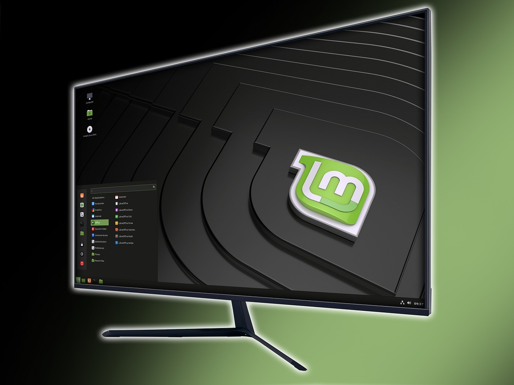

Linux ist kostenlos – Warum noch für Windows bezahlen?

Im Oktober 2025 ist Schluss: Microsoft beendet den Support für Windows 10. Für Millionen Nutzer bedeutet das: Entweder ein neues Gerät kaufen, das Windows 11 unterstützt, oder auf ein Betriebssystem ohne Sicherheitsupdates weiterlaufen – ein enormes Risiko.
Doch es gibt eine dritte Option, über die viel zu wenig gesprochen wird: Linux. Ein kostenloses, sicheres und für Senioren durchaus geeignetes Betriebssystem.
Das Windows 10 Problem: Geplante Obsoleszenz?
Windows 10 läuft auf vielen älteren Computern einwandfrei. Doch Microsoft zwingt Nutzer praktisch zum Umstieg auf Windows 11 – oder zum Neukauf eines Computers. Die Systemanforderungen für Windows 11 sind so hoch angesetzt, dass viele funktionsfähige Geräte künstlich ausgeschlossen werden.
Nach dem Support-Ende erhält Windows 10 keine Sicherheitsupdates mehr. Ihr Computer wird zunehmend anfällig für Viren, Trojaner und andere Bedrohungen. Online-Banking, E-Mails und persönliche Daten sind dann in Gefahr.
Linux: Die kostenlose Alternative
Linux ist ein Betriebssystem wie Windows – nur mit einem entscheidenden Unterschied: Es ist komplett kostenlos und Open Source. Das bedeutet:
- Keine Lizenzkosten – weder beim Installieren noch später
- Keine Werbung im System
- Keine Zwangsupdates, die Ihren Computer verlangsamen
- Regelmäßige Sicherheitsupdates – oft jahrelang für ältere Hardware
- Respekt vor Ihrer Privatsphäre – keine Datensammlung wie bei Microsoft
Linux Mint: Ideal für Senioren
Unter den vielen Linux-Varianten empfehlen wir besonders Linux Mint. Diese Version wurde speziell für Einsteiger entwickelt und ähnelt Windows bewusst in der Bedienung.
1. Vertraute Bedienung: Startmenü unten links, Taskleiste, Desktop – alles ähnlich wie bei Windows
2. Schnell auf älteren Geräten: Läuft flüssig auch auf 10 Jahre alten Computern
3. Viele Programme vorinstalliert: Browser, E-Mail, Office-Programme inklusive
4. Einfache Installation: Schritt-für-Schritt-Anleitung auf Deutsch
5. Große Community: Viele deutschsprachige Hilfe-Foren
Was funktioniert mit Linux?
Die wichtigsten Aufgaben, die Sie täglich am Computer erledigen, funktionieren problemlos mit Linux:
- Internet: Firefox, Chrome und andere Browser laufen wie gewohnt
- E-Mail: Thunderbird ist vorinstalliert und einfach zu bedienen
- Office: LibreOffice ist kostenlos dabei und kompatibel mit Word, Excel & Co.
- Fotos: Bearbeiten, verwalten, ausdrucken – alles möglich
- Videos & Musik: Alle gängigen Formate werden abgespielt
- Drucker & Scanner: Die meisten Geräte funktionieren automatisch
Was funktioniert nicht?
Ehrlichkeit ist wichtig: Nicht alles läuft unter Linux. Folgende Einschränkungen sollten Sie kennen:
- Microsoft Office: Word, Excel, Outlook laufen nicht (aber LibreOffice ist eine gute Alternative)
- Spezielle Windows-Programme: Manche Anwendungen gibt es nur für Windows
- Manche Drucker/Scanner: Ältere oder exotische Modelle können Probleme machen
Sie können Linux Mint erstmal testen, ohne etwas zu installieren! Mit einem USB-Stick können Sie Linux starten und ausprobieren. Ihr Windows bleibt dabei unangetastet. Erst wenn Sie überzeugt sind, installieren Sie es dauerhaft.
Ist Linux wirklich für Senioren geeignet?
Diese Frage bekommen wir oft. Unsere ehrliche Antwort: Ja, aber...
Linux Mint ist bewusst einsteigerfreundlich gestaltet. Wer mit Windows zurechtkam, findet sich meist nach kurzer Eingewöhnung zurecht. Allerdings:
- Die Umstellung erfordert Offenheit für Neues
- Manche Begriffe sind anders als bei Windows
- Bei Problemen braucht man Geduld oder Hilfe
Unterstützung in Bremen-Nord
Sie interessieren sich für Linux, sind aber unsicher? Wir helfen Ihnen gerne:
• Beratungsgespräche: Ist Linux für Sie geeignet?
• Live-Vorführung: Sehen Sie Linux in Aktion
• Installation: Wir helfen beim Umstieg
• Schulungen: Lernen Sie die Grundlagen
• Nachbetreuung: Auch nach der Installation sind wir für Sie da
Kontakt: 📞 +49 178 1603960 oder E-Mail
Fazit: Eine Überlegung wert
Linux ist nicht für jeden die richtige Lösung. Aber es ist eine echte Alternative, die Sie kennen sollten – besonders wenn:
- Ihr Computer für Windows 11 zu alt ist
- Sie kein Geld für ein neues Gerät ausgeben möchten
- Sie Wert auf Datenschutz und Unabhängigkeit legen
- Sie offen für neue Wege sind
Die wichtigste Botschaft: Sie haben die Wahl. Microsoft möchte Sie glauben lassen, es gäbe nur Windows. Aber das stimmt nicht. Linux zeigt, dass digitale Teilhabe auch ohne teure Zwangsupdates möglich ist.
Kommen Sie zu unserer nächsten Sprechstunde oder rufen Sie uns an. Schauen Sie in die Tageszeitung oder immer wiederauf unsere Homepage. Wir zeigen Ihnen Linux ganz unverbindlich und beantworten all Ihre Fragen.